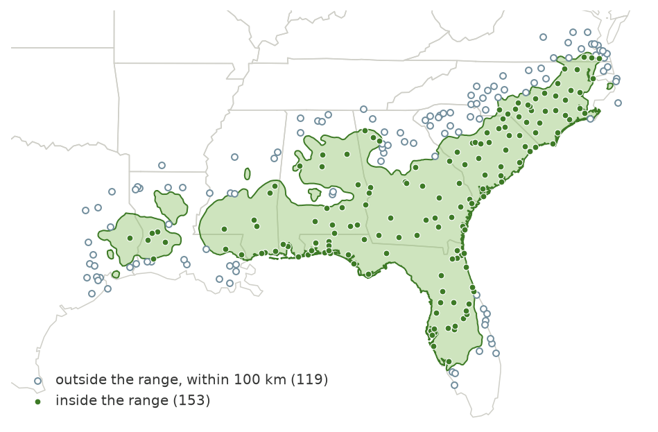
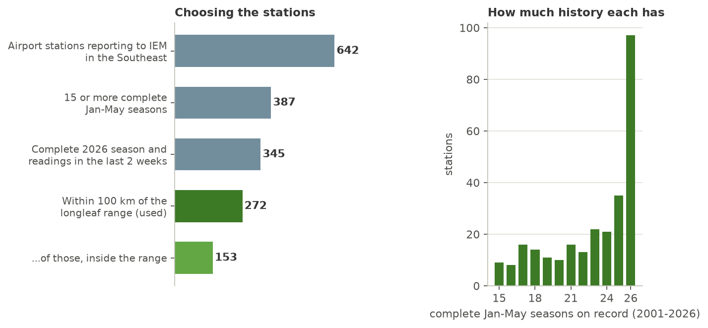
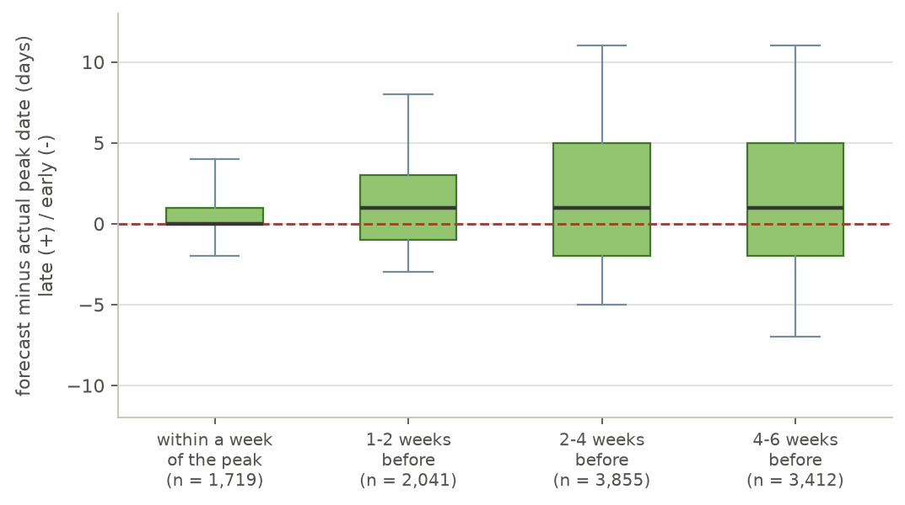

How the pollen countdown map is made
A closer look at where the temperatures come from, how they become a forecast, and how well it holds up when we replay the past. Back to the map.
The short version
Each morning, the map gets updated. It looks at the temperature data each weather station has collected since January 1, and asks how soon that total heat accumulation reaches the level Boyer found is needed for peak pollen shedding. Stations that have already reached it get a date. For the rest, the map replays the weather from recent springs to see how soon it could get there. The original article explains Boyer’s idea. This page explains what the computer does with it.
Where the temperatures come from
The map uses the daily high and low temperature from airport weather stations. Airports record the weather around the clock, and the Iowa Environmental Mesonet at Iowa State University archives those records and shares them freely, with no account or key needed. That matters for a page that has to update itself every day for years.
Not every airport station is good enough to use. Of the 642 stations in the Southeast that report to the archive, I kept the ones with at least 15 complete January–May seasons on record since 2001, a complete 2026 season, and readings in the last two weeks. I also kept only stations within 100 km of the longleaf pine range, so the map has data beyond its edges as well as inside. That leaves 272 stations, 153 of them inside the range (Figures 1 and 2). Every part of the range is within 100 km of one of them, and 84% of it is within 50 km.

Figure 1. The 272 weather stations behind the map. Stations outside the range still help, because the smooth surface between stations is fitted using them, but only the part inside the range is drawn. Range: Little (public domain).

Figure 2. How the station list was chosen (left), and how many springs of history each station has (right). Stations keep different history lengths, and the record grows by one spring each June.
Missing readings are handled cautiously. Gaps of up to three days are filled in between the readings on either side. Longer gaps are filled with the typical heat for that day of the year, and those stations are flagged. A station with too many gaps gets no forecast, and a station whose latest reading is a few days old is forecast from its own last day. If fewer than 90% of stations report, the daily run stops without publishing anything, so yesterday’s map stays up instead of a broken one.
From temperatures to heat
Each day’s high and low give one number: the heat that day added. The method is the one Boyer used, from Lindsey and Newman (1956). It counts the degrees above 50 °F, weighted by how long the day stayed warm, and the daily totals add up from January 1. Boyer’s threshold is the total a station needs to reach on a given day for peak shedding to occur: 19,009 degree-hours on January 1, dropping by 89.26 for each day of the year that passes.
Boyer worked from hourly readings. The map uses only the high and low, and estimates the daily mean as their midpoint. I tested how much that matters at Camilla, Georgia, for 2026. Using the midpoint instead of hourly readings moved the crossing date by one day, and the airport in nearby Albany (about 25 miles away) crossed on the same day as the midpoint version. That is close enough for a forecast that is scored in days.
The forecast
A station that has not reached its threshold yet is forecast by replaying recent springs. The heat collected so far this year is fixed. What is left to guess is the weather still to come. So the map takes each of the last ten springs in turn, adds that spring’s daily heat, starting tomorrow, onto this year’s total, and notes the day the total crosses Boyer’s line. Ten springs give ten dates. The range on the map is the middle half of them, and it narrows as the peak gets closer, because more of the spring has already happened.
Why ten? Springs have been getting warmer, and a forecast built from all the years since 2001 ran late in recent years, since it was leaning on cooler springs. Using only the latest ten cut the average lateness at 8–28 days ahead from 2.6 to 1.5 days, and trimmed the typical error from 3.7 to 3.4 days. Some scenarios never cross by the end of May, and those show as an open-ended range.
Between seasons, the map looks ahead. From June to the end of December there is no new weather to add up, so the map shows a preseason outlook for the coming spring instead. Every station starts at zero heat on January 1, and the ten scenarios are simply the last ten springs replayed from the start. Nothing about this spring is known, so it is far less sharp: replaying 2011–2026 as if the forecast were made on January 1, the typical miss was 6 days, about a third of the forecasts were within 3 days and half were within 5. The outlook also ran about 3 days late on average, and in warm springs such as 2012, 2017 and 2023 it missed by 11 to 17 days. It is labeled as an outlook on the map, and it turns into a live forecast when daily updates begin in January.
From stations to a map
Between stations, the map draws a smooth surface through their predicted dates. The surface is a thin-plate spline, which behaves like a flexible sheet pinned to the stations. How stiff to make it was settled by hiding one station at a time and checking how well the rest predicted it. In a test on March 5, that error averaged about two days. The surface is drawn only inside the longleaf range, on a grid of roughly 5 km cells, and contour lines are drawn for every day, with heavier lines every 5 and 15 days.
Replaying the past
To find out how good the forecast is, I ran it on previous years as if they were happening now. For each of 16 springs (2011–2026), I made forecasts on five dates from February 1 to April 1, at all the stations that had not yet reached their threshold. Each forecast saw only the weather up to its date, plus the ten springs before it, so nothing from the future leaked in. Then I compared each forecast with the day the station really crossed. That gives 15,616 forecasts.
![Four small charts for the Albany, Georgia airport station, one for each of the springs 2013, 2016, 2019, and 2025. Each shows forecasts made on Feb 1, Feb 15, Mar 1, and Mar 15. The predicted date is a dot with a green bar for the middle-half range, and a dashed red line marks the real crossing date. In 2013 and 2025 the forecasts start within about a week of the real date and settle on it. In 2016 they start about a week late, and in 2019 the first forecast is about nine days late. All close in as the date approaches.](img/methods-replay-example.png)
Figure 3. Four replays at the Albany, Georgia airport. Each dot is the forecast made on the date below it, the green bar is the middle-half range, and the dashed red line is the day the station really crossed Boyer’s line. The forecasts wander early on and settle as the date gets closer.

Figure 4. Forecast error by how far ahead the forecast was made. The box is the middle half of the forecasts, the line inside it is the median, and the whiskers reach the 5th and 95th percentiles. The dashed red line is a perfect forecast.
Forecasts get sharper as the peak nears. Within a week of the peak, the typical miss is 1 day and 94% of forecasts land within 3 days. At 1–2 weeks it is 2 days and 75%. At 2–4 weeks it is 3 days and 52%, and at 4–6 weeks 4 days and 46%. The green middle-half range does about what it promises: it holds the true date roughly half the time or better at every lead time (67%, 55%, 51% and 52%).
The forecasts also tend to run a day or two late. Most of that comes from a few warm late winters (2012, 2017, 2018 and 2023), when the peak came 3 to 7 days earlier than the recent past suggested. Without those four springs the average lateness at 1–4 weeks ahead falls from 1.8 to 0.7 days.
What it can’t tell you
A few limits are worth knowing. The replays also check the heat sum, not the pollen: the “true” date is the day the same temperature data crosses Boyer’s line. This project has no pollen counts of its own, so it leans on Boyer’s own check, which found the threshold matched observed peaks with an average deviation of 0.3 day at his original sites and 1.6 days at eight later ones. Airport thermometers are not your yard, so a shady, low, or coastal spot can run a little off. And the map is a smooth surface, so it hides local detail between stations.
Data and credits
- Temperatures: daily station summaries from the Iowa Environmental Mesonet (Iowa State University), which archives NWS and FAA airport observations.
- Range map: E. L. Little Jr., Atlas of United States Trees, public domain, mirrored at wpetry/USTreeAtlas. State outlines in Figure 1 from the open PublicaMundi MappingAPI data.
- Basemap: OpenFreeMap with OpenStreetMap data, drawn with MapLibre GL JS.
- Boyer, W. D. (1973). Air temperature, heat sums, and pollen shedding phenology of longleaf pine. Ecology, 54(2), 420–426. https://doi.org/10.2307/1934351
- Lindsey, A. A., & Newman, J. E. (1956). Use of official weather data in spring time-temperature analysis of an Indiana phenological record. Ecology, 37(4), 812–823.